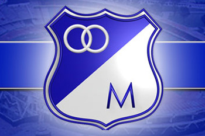

pero fue empezado a llamar como Los Millonarios en el año de 1939 cuando su nombre era Club Municipal de Deportes; oficialmente fue fundado el 18 de junio de 1946 bajo el nombre de Club Deportivo Los Millonarios y, posteriormente, como Millonarios Fútbol Club el 20 de abril de 2011 cuando fue reconstituido como Sociedad Anónima. Participa en la máxima categoría de la División Mayor del Fútbol Colombiano, la Categoría Primera A o Liga Águila,
desde su fundación en 1948 siendo uno de los tres únicos equipos que ha participado en todos sus torneos, junto a Independiente Santa Fe y a Atlético Nacional Es el segundo equipo más laureado del fútbol colombiano con 17 títulos en total entre campeonatos nacionales e internacionales.8 En su palmarés adornan 14 campeonatos del torneo local de la liga Colombiana, y se registra 2 títulos de la Copa Colombia. También, fue el ganador de la última edición de la Copa Merconorte en 2001, además de algunos otros torneos amistosos internacionales.  Es regido por la Federación Colombiana de Fútbol y la DIMAYOR a nivel nacional, y por la Confederación Sudamericana de Fútbol (CONMEBOL) y la Federación Internacional de Fútbol Asociación (FIFA) a escala internacional. A partir del inicio del campeonato colombiano en 1948 logró la mayor cantidad de los títulos locales que se disputaron y conformó un equipo denominado el Ballet Azul, que era considerado de gran importancia a nivel mundial durante la primera parte de la década de los años 1950, cuando consiguió muchos triunfos internacionales, entre los que destacan el Campeonato de las Bodas de Oro del Real Madrid y la Pequeña Copa del Mundo de Clubes de 1953, que le dieron los calificativos del equipo "Embajador".NOMBRE: Rafael Fernando APELLIDOS: Robayo Marroquín ALIAS: Robayito Estatura: 1.85mts Peso: 77 Kgs POSICION: Volante mixto DORSAL: 8 PAIS: Colombia CIUDAD: Bogotá D.C FECHA DE NACIMIENTO: 24 de Abril de 1984 SIGNO DEL ZODIACO: TauroJuan CardenasEQUIPOS ANTERIORES: Atlético Nacional (2001 – 2003), Once Caldas (2do. Semestre 2004), Club Deportivo Los Millonarios (2005 – 2011). Chicago Fire, EE.UU (2012 primer semestre), Millonarios F.C. (Segundo semestre 2012). LOGROS: Semifinalista Copa Sudamericana 2007 (Millonarios F.C.), Campeón Copa Postobón (Millonarios F.C., 2011), Campeón Liga Postobón II-2012 (Millonarios F.C. DATO CURIOSO: Rafael RobayoSe formó en la Escuela de Fútbol Vida entre el año 2000 y el 2002. En estas selecciones que disputaron los torneos nacionales jugaba de volante ofensivo y su socio era Radamel Falcao García, quien jugaba como centrodelantero en estas escuadras. Mientras Robayo anotaba (12) goles por torneo, su amigo Falcao, hacía de a (16) anotaciones por campeonato